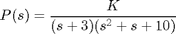
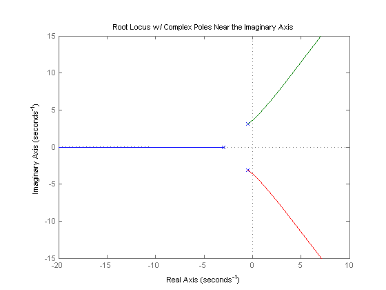
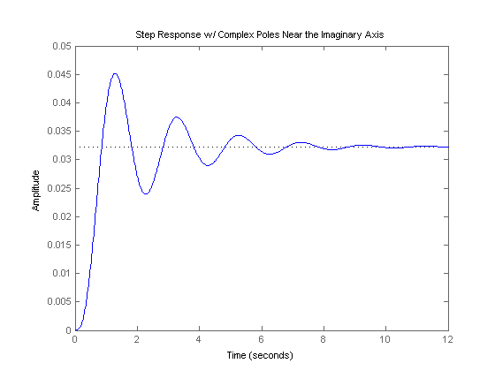
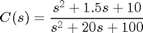
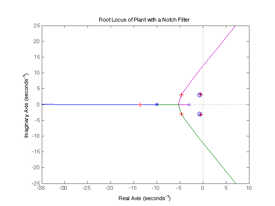
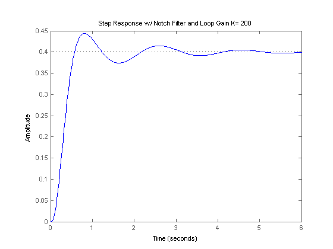

Extras: Notch Filter
There are many times when the transfer function of a controlled process contains one or more pairs of complex-conjugate poles that lie close to the imaginary axis in the s-plane. This will result in an undesirable closed-loop system that is unstable or only lightly damped. For example, consider the following transfer function.
(1)
If you were to generate the root locus of this system using the following code. You would generate the plot shown below.
s = tf('s'); P = 1/((s+3)*(s^2+s+10)); rlocus(P) title('Root Locus w/ Complex Poles Near the Imaginary Axis');
As you can see, the plot shows that this system is only stable for a small region of the root locus (range of gains K). The portion that is stable will be only lightly damped (small zeta). By closing the loop and plotting the step response for this system in the portion of the root locus that is in the left-half plane (for a gain of one), you can see that the response is poor.
sys_cl = feedback(P,1);
step(sys_cl)
title('Step Response w/ Complex Poles Near the Imaginary Axis');
 There is a large overshoot, long settling time, and a large steady-state error. If you try to increase the gain, you will see that the response initially improves slightly, but becomes unstable before a desirable response can be achieved. Pure proportional control is obviously not a good way to control this system.
One way to control this system is to design a controller with zeros near the undesirable, lightly-damped poles of the plant. These zeros can attenuate the effect of these poles. The dominant closed-loop poles of the system can then be placed in a more desirable position. Such a controller is called a notch filter. Before getting into the specifics of a notch filter, it should be noted that due to the nature of most systems, exact pole/zero cancellation cannot be obtained; nor should it be attempted. Approximate cancellation will give us many of the desirable characteristics without the pitfalls.
For the example above, let's try placing the controller zeros slightly to the left of the lightly-damped plant poles (it is a good idea to pull the poles to the left instead of to the right). Try the following compensator.
(2)
As you can see, the roots of the numerator of the controller are almost the same as the complex poles of the denominator of the plant; the denominator of the controller introduces two poles at -10. If we implement this controller employing the code given below and run at the command line, we will generate a root locus plot like the one shown below.
C_notch = (s^2+1.5*s+10)/(s^2+20*s+100);
rlocus(C_notch*P);
title('Root Locus of Plant with a Notch Filter');

The complex poles near the imaginary axis have been nearly canceled and more of the root locus is now in the left half plane. This means that a larger gain, K, can be employed, while maintaining stability. Furthermore, higher damping ratio can be achieved using lower gains (zeta term will be larger). If we close this loop (using the rlocfind command to find a specific gain), and inspect the step response, the system response should be much improved. Enter the command [k,poles] = rlocfind(C_notch*P) at the command line. When prompted to select a point, pick a point near one of the crosses in the following root locus. The gain k should be about 200.

The closed-loop step response can then be generated using the following code.
k = 200;
sys_cl = feedback(k*C_notch*P,1);
step(sys_cl);
title('Step Response w/ Notch Filter and Loop Gain K= 200');
 Inspection of the above demonstrates that this is a much better step response. The overshoot and settling time are both smaller. There is still steady-state error, but that can be reduced with a lag controller later. The placement of the poles in the notch filter is a matter of trial and error. They should be far enought to the left to pull the root locus into the left-half plane, but their exact location can be determined based on the desired pole locations and by experimentation.